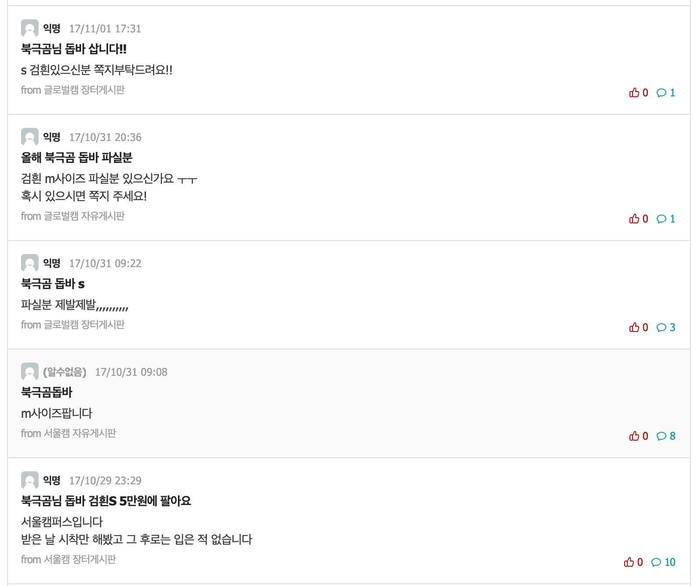

2017 공구
겨울용 외투가 필요하여서 공동구매를 찾아보았고, 해당 공동구매의 진행에 참여하여서 (북극곰)돕바 공구에 참여 하여 2인으로 공구 진행
2017년 당시 막 aws 배포에 대해서 이것저것 학습을 하고 있었고, 간단한거라도 배포하고싶다는 생각이 강렬하게 있던 와중에
공구의 참여인원이 350 ~ 400명으로 점점 인원이 늘어나고 있고, 단체톡으로 공지와 소통을 하던도중
톡을 출입하는 유동 인원이 한자리가 아닌 수십명이라서 같은 내용을 반복해서 공지하고, 톡에 입장전 대화중나온 이미지나 관련내용들이
이후에 들어온 사람은 확인하지 못하기도 하고, 여러가지 혼잡하게 진행하게 되어서 공지필독과 배포한 주소 작성하여서 상단고정 공지하고,
이미지와 공지 링크 텍스트 등을 정리하여서 공구를 진행하게됨
2018 공구
입학할때 구입하였던 과잠이 시간과 관리소홀로 팔부분의 고무재질이 떨어지고 못입게 되어서
17년에 돕바를 공구하였던 친구에게 연락하여서 이번에는 야잠으로 공구를 진행함
인원은 N백명 으로 많은것은 아니였지만 이전에 사용해서 편리하였던 배포 주소 공지고정 방식이 편리하여서 한번더 사용함
이후로 지금까지 돕바와 학잠 잘 입고 있어서 추가로 공구를 주도한적은 없지만, 최근까지 커뮤니티를 통해서 공구가 많이 있는것을 보아
공구를 편하게 해줄만한 플랫폼 제작 사이드 프로젝트를 진행하면 좋을지..... 일단.. 메모
에타에 검색해보니 여기서 사고 팔고 하는게시글이 5~6페이지 정도 있길래 캡쳐해봄
